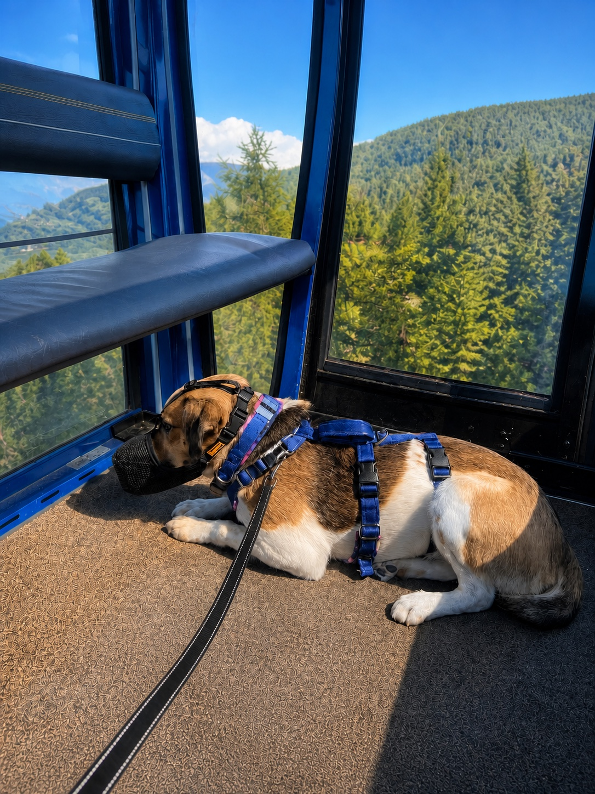

Practise the muzzle
Build comfort at home with rewards. Keep every practice short enough that your dog can still relax, eat and choose to move away. The station queue should never be the first fitting.

Prepare calmly, recognise fear or nausea early, and know when not boarding is the healthier choice.
A lift can remove a difficult climb, but the cabin itself must still feel manageable.
Build comfort at home with rewards. Keep every practice short enough that your dog can still relax, eat and choose to move away. The station queue should never be the first fitting.
Watch the cabins from a comfortable distance, then leave before worry begins.
Choose a quiet time, a short journey and the least crowded cabin available.
Policies can change. Make sure to check lifts opening ahead of your hiking day!
A gondola is a convenience, not a test. If your dog cannot recover at the station, choose a lower walk, a quieter day or a route without a lift.
Plan etiquette, food stops and overnight stays.
Prepare for the situations you may meet outside.
Veterinary guidance: Merck Veterinary Manual: fear and anxiety, motion sickness in dogs, and the AVSAB humane training statement. Operator policies: Cortina Skiworld, Lagazuoi, Val Gardena and Chamonix. General information, not veterinary advice.